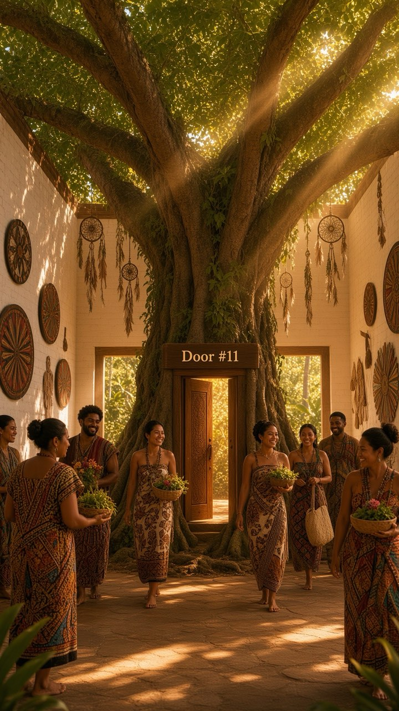

Aloha 🌴
In Lak'ech Ala K'in
I am another yourself.
We are One.
A New Covenant...
Where the Healing Waters Flow
You have entered the Indigenous Ancient Present-Future in The Sanctuary of Self Healing at the Oneness Wellness Center.
I am Clan Mother Shifa, carrier of the lineage of Cherokee, Choctaw, Mayan, and Olmec ancestral medicine ways. This Sanctuary is where I share them daily.
What grows here, grows because you stood in it now.
The House is open. Come in. Sit with us. Take your place.
Let Wholeness Remembered rise to meet you.

Every door leads to wholeness remembered.
The Daily Attunement Reading
Each morning, a daily gift arrives — the day's galactic signature, an affirmation for your meditation, and a gentle Remedy of the Day.
The gentle check-in
Pick gentle words for how you feel. The Circle meets you there, and a guide rises to walk with you.
The six gentle guides
Breathe
Your breath is always with you.
Move
Movement does not have to be intense to count.
Rest
Rest is part of wellness, not a reward for finishing everything else.
Meditate
Stillness is where you come back to yourself.
Visualize
Close your eyes and picture the life you want.
Nourish
Good food, good water, good rest — the body thrives on what you give it.
Nia's ritual
A quiet daily self-check-in, offered to those who carry the passcode. One gentle arrival, each day.
Two deeper doors
Message the wellness lifestyle guide, day or night. Or book a free Attunement Conversation, whenever you are ready.
The Wellness Survey
Ten gentle questions about how you have been — your answers and any photo stay private on this device, only for you.
Manifesting Wellness, Wholeness Remembered. 💚